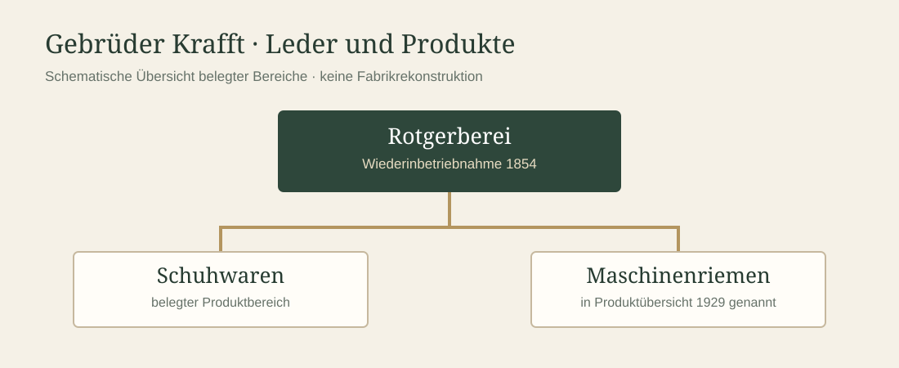

Mehr als eine Schuhfabrik
Die Firma Gebrüder Krafft in Fahrnau ist vor allem durch ihre Leder- und Schuhwarenproduktion bekannt. Zu ihrem Sortiment gehörten jedoch auch Maschinenriemen. Damit berührt ihre Geschichte zwei Seiten der Industrialisierung: die Verarbeitung von Leder und dessen Verwendung zur Kraftübertragung in Fabriken.
Diese Seite bündelt die bisher gesicherten Hinweise. Sie beschreibt nicht ohne Beleg, welche Gerb-, Schneide- oder Verbindungsverfahren Krafft im Einzelnen einsetzte.
Von der Rotgerberei zum vielseitigen Lederbetrieb
Für das Jahr 1854 ist die Wiederinbetriebnahme einer Rotgerberei überliefert. Die spätere Entwicklung von Gebrüder Krafft umfasste neben Schuhwaren weitere Erzeugnisse aus Leder. Eine Produktübersicht von 1929 nennt auch Maschinenriemen.
Der Begriff Rotgerberei verweist auf die traditionelle pflanzliche Gerbung. Daraus lässt sich aber noch nicht ableiten, dass Krafft das für seine Treibriemen benötigte Leder vollständig im eigenen Betrieb gerbte oder über den gesamten Zeitraum dieselben Verfahren anwandte.

Erst Wasser, später Dampf
Für die Entwicklung des Betriebs ist die Abfolge Wasserkraft vor Dampfkraft durch die Krafft-Forschung belegt. Sie zeigt den Wandel der Energieversorgung, wie er für zahlreiche Industriebetriebe des 19. Jahrhunderts charakteristisch war.
Ob und wie die jeweiligen Kraftquellen im Einzelnen mit den Maschinen der Treibriemenfertigung verbunden waren, lässt sich aus dieser Abfolge allein nicht bestimmen. Eine allgemeine technische Erklärung der Transmission bietet unsere Seite Maschinen & Antriebe.

Ein belegter Produktionszweig
Die Produktangaben von 1929 und historische Aufnahmen der Riemenherstellung zeigen, dass Maschinenriemen nicht nur ein beiläufiger Begriff in der Unternehmensgeschichte sind. Sie verdienen eine eigenständige Betrachtung neben Schuhen und Holzsohlen.
Die historischen Bilder müssen noch einzeln erschlossen werden: Welche Maschinen sind zu sehen? Welche Bearbeitungsschritte lassen sich erkennen? Wann entstanden die Aufnahmen? Erst nach dieser Prüfung sollten wir den Abbildungen konkrete Arbeitsverfahren zuordnen.
Bildmaterial in Vorbereitung
Hier werden später die historischen Krafft-Aufnahmen mit Datierung, Herkunft und Bildunterschriften eingefügt. Bis zur Rechteklärung verzichten wir auf eine ungeprüfte Übernahme.
Was andere Betriebe erklären können
Zeitgenössische Fachtexte, darunter das Polytechnische Journal, beschreiben Arbeitsgänge wie Zuschneiden, Strecken, Abschärfen und Verbinden von Ledertreibriemen. Sie helfen, historische Fotografien zu verstehen, sind aber kein unmittelbarer Nachweis für die Verfahren bei Krafft.
Ein weiterer Vergleichsbetrieb ist W. Funcke, dessen Treibriemenfertigung seit 1879 dokumentiert ist. Nach einer Auskunft des Unternehmens vom November 2026 werden dort noch Maschinen aus der damaligen Zeit eingesetzt. Eine genauere Einordnung steht aus.
Offene Fragen
- Wurden die Rohhäute oder bereits gegerbtes Treibriemenleder eingekauft?
- Welche Gerbverfahren kamen für die Maschinenriemen tatsächlich zum Einsatz?
- Welche Geräte und Arbeitsschritte zeigen die erhaltenen Krafft-Fotografien?
- Welche Abnehmer und Einsatzgebiete hatten die Maschinenriemen?
- Wie entwickelten sich die Produktionsmengen im Lauf der Zeit?
Diese Fragen bleiben ausdrücklich offen, bis betriebliche Unterlagen oder eindeutig zuordenbare Bildquellen vorliegen.
Quellen und Unternehmensgeschichte
Grundlage dieser Seite sind die bisher ausgewerteten Krafft-Unterlagen, insbesondere die historischen Angaben zur Rotgerberei, die Produktübersicht von 1929 und die bekannten Aufnahmen der Riemenproduktion. Die Einzelnachweise werden bei der abschliessenden Quellenprüfung ergänzt.
Forschungsprojekt Gebrüder Krafft – Unternehmensgeschichte · Quellen zur Treibriemenforschung